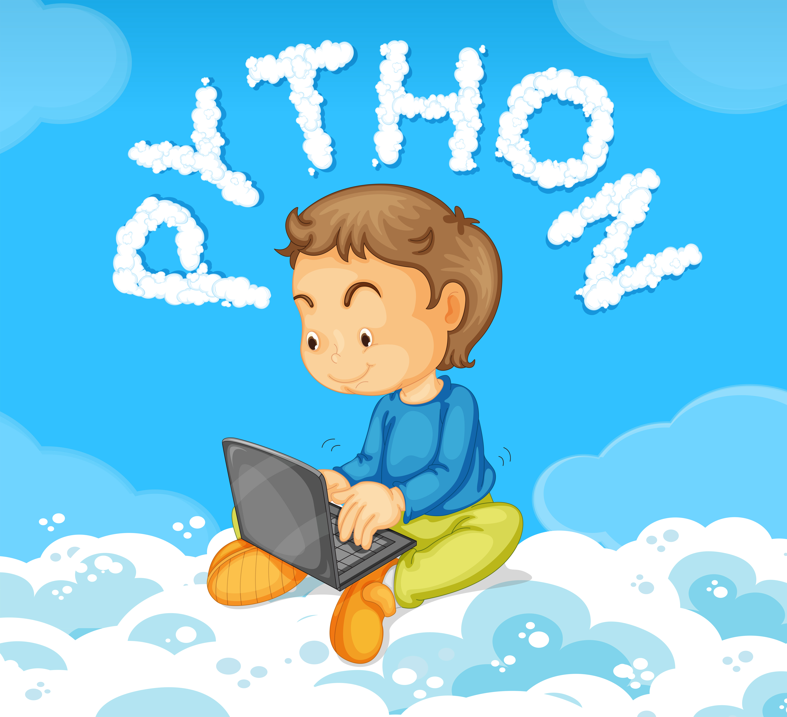
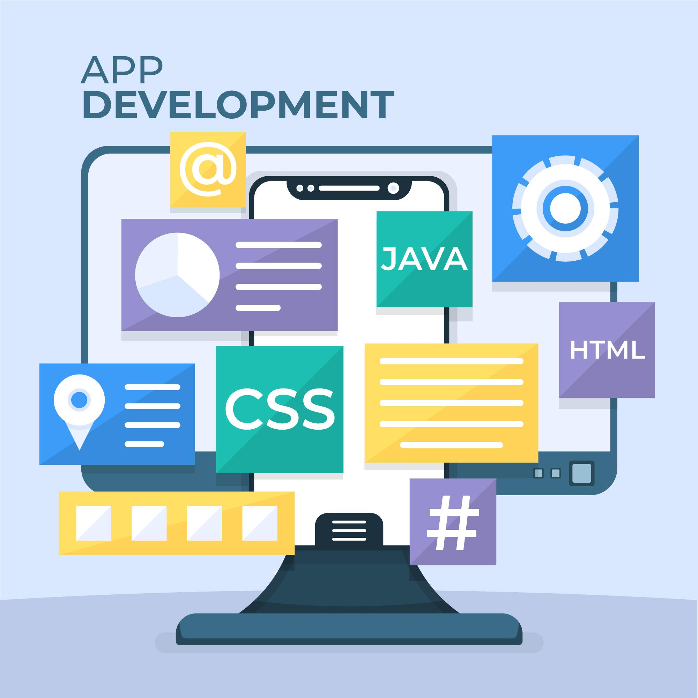

3 Bahasa Pemrogaman Yang Wajib
Kamu Kuasai Di tahun 2020


Di jaman Yang serba maju sekarang kita harus selalu update tentang perkembangan teknologi, Lalu salah satu cara untuk membekali kita tentang teknologi yang berkembang sekarang ini, tidak ada salahnya kita belajar sesuatu yang mungkin akan bermanfaat untuk kita sendiri,
Contohnya adalah belajar bahasa pemrogaman..Selain itu belajar bahasa pemrogaman juga bisa kita jadikan Investasi masa depan untuk diri kita, Karena entah apa itu aplikasi android, website bahkan sesuatu yang hebat missal Kecerdasan buatan, itu bisa di kembangkan yaa melalui sebuah Bahasa pemrogaman..
Jika anda bingung dengan mulai dari mana belajarnya atau bahkan bahasa pemrogaman apa yang ingin di pelajari teknoart.com sudah merangkum 3 Bahasa pemrogaman yang wajib kamu Ketahui di tahun 2020 .. Berikut adalah daftarnya

1) Javascript
Di urutan pertama ada Javascript. Javascript lahir dan dibesarkan oleh Netscape Communications, perkembangan javascript juga tak bisa dilepaskan dengan era yang dinamakan “Browser war” antara Internet Explorer buatan Microsoft dengan Netscape Navigator buatan Netscape Communications.
Javascript adalah bahasa pemrogaman yang dapat berjalan dalam sebuah website, Misal bagaimana tombol dalam sebuah halaman di klik atau bisa kita bilang Javascript adalah bahasa pemrogaman yang membuat website berjalan dengan dinamis, Javascript dikembangkan melalui fitur/versi yang biasanya disebut orang dengan EcmaScript dan untuk perkembangan Javascript versi terbaru adalah ES6(ECMAscript 6) ,
dan alasan saya merekomendasikan javascript untuk kamu pelajari adalah karena bahasa ini sudah digunakan oleh web- web besar di seluruh dunia, lalu javascript itu beda karena dia adalah salah satu bahasa yang tidak bertipe seperti java DKK, dan masih banyak keunggulan yang dimiliki oleh bahasa yang satu ini… Info selengkapnya bisa anda baca melalui situs https://www.w3schools.com/js/default.asp atau melalui tutorial lain yang ada di youtube atau website lain.

2) Python
Selanjutnya ada Python tapi bukan pyton yang biasanya ada di rawa-rawa, Python yang saya maksud adalah sebuah Bahasa Pemrogaman yang dikembangkan oleh Guido van Rossum dan tempat pembuatannya itu di Centrum Wiskunde & Informatica (CWI) di Belanda pada awal tahun 1990-an.
Oh yaa..Bang Rossum ini ketika membuat python dia terinspirasi dengan bahasa pemrogaman ABC, lalu singkat cerita tercipta lah bahasa pemrogaman Python ini.. Yang membuat Pyton ini jadi bahasa yang saya rekomended adalah karena si python ini mudah dimengerti, gratis!!!(Netizen kan suka yang gratis – gratis :v), dinamis, dan yang lagi hype Abis dikalangan progammer jaman now,
lalu jangan lupa bahwa bahasa Python ini multi platform ia bisa digunakan untuk WEB Development, Mobile Apps, Desktop Apps,
BTW kenapa tadi saya bilang bahasa yang lagi hype abis/ trending, karena jaman sekarang orang lagi pengen belajar apa itu machine Learning , Robotics , Data Analisis , Data Science, Jadi dengan kalian memahami Bahasa Pemrogaman Python kalian akan dapat semua itu (Tapi harus dengan kerja keras dan konsisten yaa!!! :)

3) Java
Selanjutnya ada Java, Salah satu bahasa pemrogaman tingkat tinggi,, kenapa?? Karena Java menggunakan paradigma OOP atau biasa di kenal dengan Object Oriented Progamming, Java pertama kali di pelopori oleh james Gosling yang merupakan engineer di Sun Microsytem,
Java mulai dikembangkan pada tahun 1991, Lalu muncullah versi Alpha dan Beta pada tahun 1995, Lalu pada tahun 2010 Java dikembangkan dan berada di bawah kuasa Oracle… Ohh yaa, buat kalian yang mungkin bertanya-tanya “apakah bahasa pemrogaman java sama javascript itu sama?” jawabannya itu BEDA.. Jadi jangan di samain yaa. Hehehe..
Lanjut….Java menurut pelopornya itu memiliki keunggulan yaitu Simpel, Berorientasi Object, Kuat, Aman, Portabel, Performa Tinggi, Multithreaded, dan dinamis selain memiliki keunggulan tersebut java ini berguna untuk Pembuatan Game, Pembuatan Apps berbasis desktop dan Android ,Buat kalian yang ingin jadi Android Developments sangat cocok untuk belajar bahasa yang satu ini..
Itu tadi sekilas info dari saya tentang bahasa pemrogaman yang bisa kamu jadika referensi untuk mulai dipelajari di tahun 2020. Ingat untuk selalu konsisten dalam belajar dan pelajari bahasa tersebut sampai anda mahir.. Karena lebih baik anda menjadi ahli dalam satu hal saja dari pada anda mengetahui segala hal tapi anda tidak paham mendalam tentang semua hal itu…
selalu jaga kesehatan dan terima kasih sudah mampir dari saya cukup sekian maaf bila ada salah kata.
MONGGO